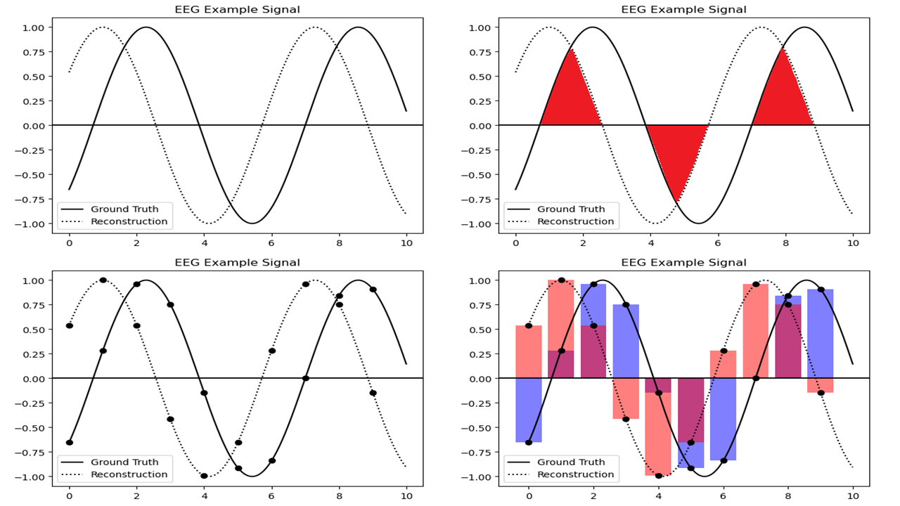
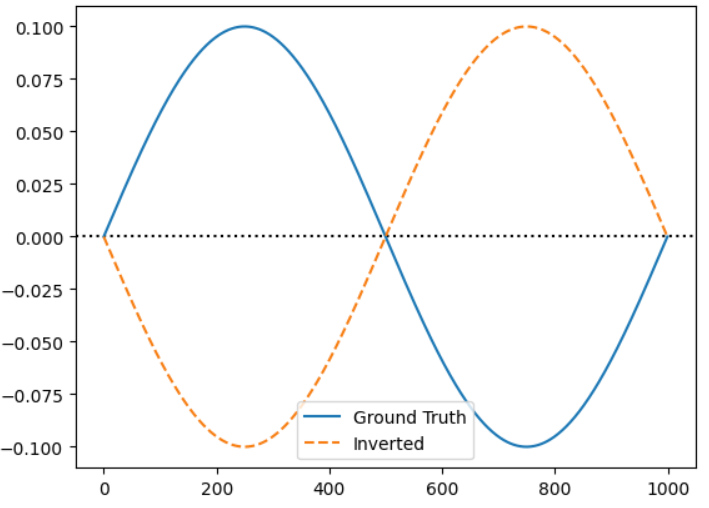

 Figure 2. our proposed methods, a structure-aware metric function for time series elf-supervised representation learning
Abstract
We propose the Signal Dice Similarity Coefficient (SDSC), a structure-aware metric function for time series self-supervised representation learning. Most Self-Supervised Learning (SSL) methods for signals commonly adopt distance-based objectives such as mean squared error (MSE), which are sensitive to amplitude, invariant to waveform polarity, and unbounded in scale. These properties hinder semantic alignment and reduce... read more
Figure 2. our proposed methods, a structure-aware metric function for time series elf-supervised representation learning
Abstract
We propose the Signal Dice Similarity Coefficient (SDSC), a structure-aware metric function for time series self-supervised representation learning.
Most Self-Supervised Learning (SSL) methods for signals commonly adopt distance-based objectives such as mean squared error (MSE), which are sensitive to amplitude, invariant to waveform polarity, and unbounded in scale.
These properties hinder semantic alignment and reduce interpretability.
SDSC addresses this by quantifying structural agreement between temporal signals based on the intersection of signed amplitudes, derived from the Dice Similarity Coefficient (DSC).
Although SDSC is defined as a structure-aware metric, it can be used as a loss by subtracting from 1 and applying a differentiable approximation of the Heaviside function for gradient-based optimization.
A hybrid loss formulation is also proposed to combine SDSC with MSE, improving stability and preserving amplitude where necessary.
Experiments on forecasting and classification benchmarks demonstrate that SDSC-based pre-training achieves comparable or improved performance over MSE, particularly in in-domain and low-resource scenarios.
The results suggest that structural fidelity in signal representations enhances the semantic representation quality, supporting the consideration of structure-aware metrics as viable alternatives to conventional distance-based methods.
MSE vs SDSC Example

Figure 1_a. Inverted Example Inverted : MSE=0.0200, SDSC=0.0000
Although numerically favorable, the output is structurally misaligned and functionally misleading. Such insensitivity to
signal semantics is particularly problematic for physiological data like EEG or ECG, where subtle structural components often carry diagnostic significance. Therefore, exclusive reliance on amplitude-centric metrics may lead to semantically incorrect reconstructions.
Definition of SDSC
The SDSC extends DSC's concept to the signal domain by interpreting the area under the curve as
a proxy for the waveform structure.
The objective in signal representation learning is
to maximize SDSC toward 1. However, directly computing SDSC via integration is infeasible in practice, as realworld signals, such as EEG, lack known analytical expressions.
To address this, a discrete approximation is adopted.
Since the SDSC score is bounded in [0, 1], we can define the
loss as 1 − SDSC(·).
$$ \mathcal{L}_{sdsc} = 1 - SDSC(E(S), R(S)) $$
However, the use of the Heaviside step function in the SDSC introduces discontinuities, which can negatively affect the stability of training.
To enable stable gradient-based optimization, a smooth approximation of the Heaviside function is introduced.
The following sigmoid-based formulation is used, with a sharpness parameter α.